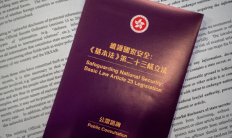

跳到主要內容
繁體
简体
2023年度世界人權報告
關於國際特赦組織
簡介
我們的工作
中國
香港
資訊安全
守護抗議
如何參與
人權公開課
加入我們
最新消息
Search
2023年度世界人權報告
關於國際特赦組織
關於國際特赦組織
簡介
我們的工作
我們的工作
中國
香港
資訊安全
守護抗議
如何參與
如何參與
人權公開課
加入我們
最新消息
Search
LGBTI
Uncategorised
中國
互聯網及社交媒體
人權捍衛者及社運人士
女性及女童
女性權利
孕產婦健康及生殖權
年度報告
最新消息
歧視
泰國
美國
資訊安全
香港
前一页
后一页
19 个结果
分类
最新
最新
最旧
文章标题 – 顺序
文章标题 -逆序
香港
2024 年 3 月 1 日
香港：跨性別社運人士賴可不應被遣返回中國大陸

香港
2024 年 2 月 27 日
香港：國際特赦組織已對港府23條立法諮詢提交意見書
香港
2024 年 1 月 31 日
香港：23條立法啟動，人權危機迫在眉睫
香港
2024 年 1 月 25 日
香港：終審法院推翻鄒幸彤的無罪判決，香港法治再次遭受重擊
香港
2024 年 1 月 23 日
鄒幸彤在獄中度過第三個生日
香港
2023 年 12 月 14 日
香港：國安處再次懸賞通緝海外社運人士，荒謬作法意圖在全球散佈恐懼
香港
2023 年 9 月 5 日
香港：法院對同性婚姻的裁決，為LGBTI權利帶來希望
香港
2023 年 6 月 4 日
香港：六四紀念日的逮捕行動，突顯了日益加劇的言論打壓
中國
2023 年 1 月 12 日
如何安全使用「安全」通訊軟體？關於Signal與Telegram的建議
前一页
1
2
后一页